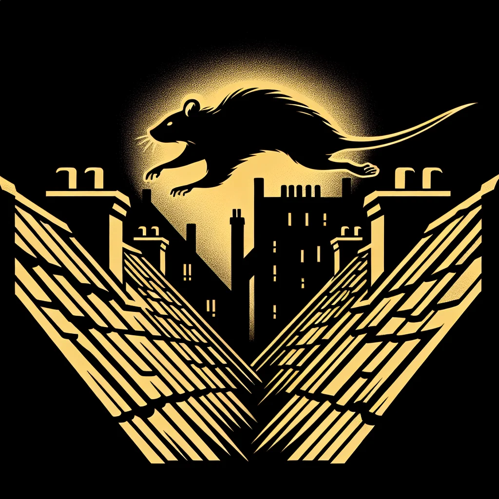

{kind=link}
{kind=link}
A Whisker's Edge: The Underground Parkour Phenomenon
In Ratopolis, a new subculture is soaring: parkour, where agile rats perform breathtaking leaps from rooftop to rooftop, turning the city into their playground.
3 minute read

The underground parkour community in Ratopolis has rapidly grown in recent years. This thrilling sport sees daring rats defy gravity, leaping and bounding across urban landscapes. From downtown rooftops to narrow alleyways, these acrobats transform the mundane into the extraordinary, chasing the adrenaline rush that comes with each daring jump.
Parkour’s roots in Ratopolis trace back to a few brave pioneers. Early adopters like Razor Tail, renowned for his rooftop leaps, faced numerous obstacles. “Parkour gives me a sense of freedom that nothing else can. It's like flying without wings,” Razor Tail shared. Despite initial challenges, their passion built a foundation for a flourishing community.
Today, the parkour scene is vibrant and energetic. A typical meetup buzzes with excitement as rats gather at popular spots like Highrise Flats and Labyrinth Alley. Safety is paramount, with participants undergoing rigorous training routines to master their skills. Whisker Wind, a trailblazing female star, emphasized, “Every jump is a leap of faith, but it's also a step towards self-discovery.”
The impact of parkour has rippled across Ratopolis. Influencing local culture and fashion, the sport has pioneered a trend of sleek, athletic wear designed for agility. Additionally, parkour fosters strong community bonds. Practitioners support and push each other to new heights, embodying camaraderie and mutual respect.
However, not all perceptions are rosy. Concerns arise from older generations about the potential risks involved. A worried elder rat voiced, "These young ones are always on the move, but they need to remember that not every leap is worth the risk." This sentiment highlights the tension between youthful daring and cautious wisdom.
An interesting comparison can be drawn between parkour and traditional rat sports. While past activities emphasized ground-based agility, parkour introduces vertical challenges that add layers of complexity and excitement. This evolution mirrors changes in rat society, reflecting a shift towards embracing physical expression and adventure.
Future prospects for parkour in Ratopolis look promising. Experts predict growth in both participation and public interest. Discussions about formal competitions and organized events are underway, potentially bringing parkour further into the mainstream. There are also community initiatives focused on promoting safe and responsible practices, ensuring longevity for the sport.
This burgeoning phenomenon is reshaping Ratopolis, blending excitement with a sense of freedom and community. As the parkour rats leap toward new horizons, they inspire the city to embrace the thrill of adventure, balanced with a mindful respect for the risks involved.
Parkour may seem audacious to some, but its essence lies in pushing boundaries and exploring limits. It challenges the notion of what’s possible, encouraging all of Ratopolis to view their environment through fresh, bold perspectives.
So, next time you hear the soft patter of paws overhead, remember that it’s more than just a sport; it’s a statement of courage, creativity, and community—a true testament to the spirit of Ratopolis.
In the end, whether proudly participating or cautiously observing, parkour invites every rat to consider: How far are you willing to leap to discover a new world?
Looking for more in-depth news and exclusive content? Follow RAT TV for real-time updates, behind-the-scenes insights and the latest breaking news.
Parkour’s roots in Ratopolis trace back to a few brave pioneers. Early adopters like Razor Tail, renowned for his rooftop leaps, faced numerous obstacles. “Parkour gives me a sense of freedom that nothing else can. It's like flying without wings,” Razor Tail shared. Despite initial challenges, their passion built a foundation for a flourishing community.
Today, the parkour scene is vibrant and energetic. A typical meetup buzzes with excitement as rats gather at popular spots like Highrise Flats and Labyrinth Alley. Safety is paramount, with participants undergoing rigorous training routines to master their skills. Whisker Wind, a trailblazing female star, emphasized, “Every jump is a leap of faith, but it's also a step towards self-discovery.”
The impact of parkour has rippled across Ratopolis. Influencing local culture and fashion, the sport has pioneered a trend of sleek, athletic wear designed for agility. Additionally, parkour fosters strong community bonds. Practitioners support and push each other to new heights, embodying camaraderie and mutual respect.
However, not all perceptions are rosy. Concerns arise from older generations about the potential risks involved. A worried elder rat voiced, "These young ones are always on the move, but they need to remember that not every leap is worth the risk." This sentiment highlights the tension between youthful daring and cautious wisdom.
An interesting comparison can be drawn between parkour and traditional rat sports. While past activities emphasized ground-based agility, parkour introduces vertical challenges that add layers of complexity and excitement. This evolution mirrors changes in rat society, reflecting a shift towards embracing physical expression and adventure.
Future prospects for parkour in Ratopolis look promising. Experts predict growth in both participation and public interest. Discussions about formal competitions and organized events are underway, potentially bringing parkour further into the mainstream. There are also community initiatives focused on promoting safe and responsible practices, ensuring longevity for the sport.
This burgeoning phenomenon is reshaping Ratopolis, blending excitement with a sense of freedom and community. As the parkour rats leap toward new horizons, they inspire the city to embrace the thrill of adventure, balanced with a mindful respect for the risks involved.
Parkour may seem audacious to some, but its essence lies in pushing boundaries and exploring limits. It challenges the notion of what’s possible, encouraging all of Ratopolis to view their environment through fresh, bold perspectives.
So, next time you hear the soft patter of paws overhead, remember that it’s more than just a sport; it’s a statement of courage, creativity, and community—a true testament to the spirit of Ratopolis.
In the end, whether proudly participating or cautiously observing, parkour invites every rat to consider: How far are you willing to leap to discover a new world?
Looking for more in-depth news and exclusive content? Follow RAT TV for real-time updates, behind-the-scenes insights and the latest breaking news.